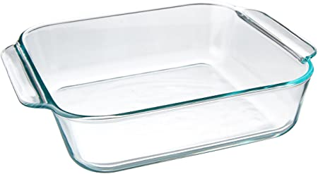
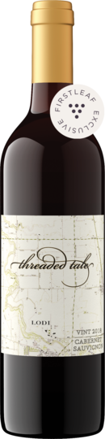
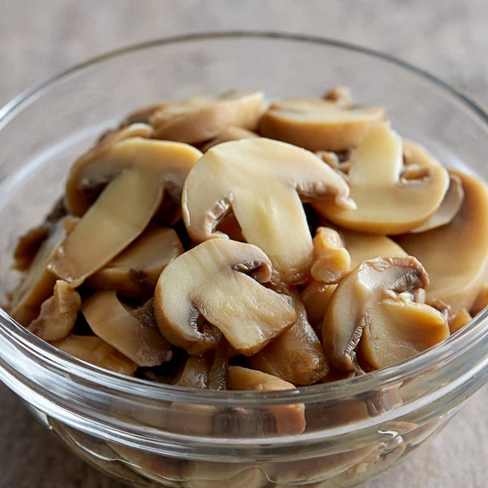
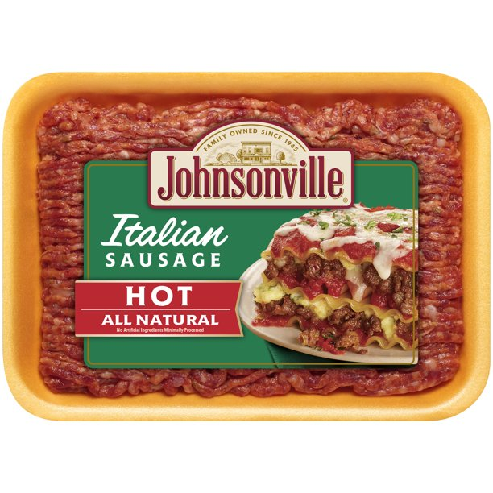
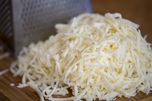

Lazy Girl Stuffed Mushrooms
This is an easy and delicious dish my fiance, Cheryl Watkins, created. This
is one that can easily be reheated and used for weekly meal planning. The
ingredients are for the base recipe so feel free to add your own little
spices and flavors to make it your own. You are going to love it.
Ingredients:
- 8 x 8 baking dish

- Bottle of wine

- Two 8oz cans of mushrooms

- 16oz Hot Italian turkey sausage

- All the mozzarella

Directions
- Open bottle of wine and pour into glass
(this is for drinking).
- Heat oven to 350°
- Layer bottom of baking dish with the ground sausage.
- Spread mushrooms evenly along the top of ground turkey.
- Spread a generous layer of mozerella on top of mushrooms.
- Place in oven for 40-45 minutes or until cheese is golden brown.
- Remove from oven and let sit for 15-20 minutes.
- Pour another glass of wine and enjoy your lazy girl stuffed
mushrooms!

Home